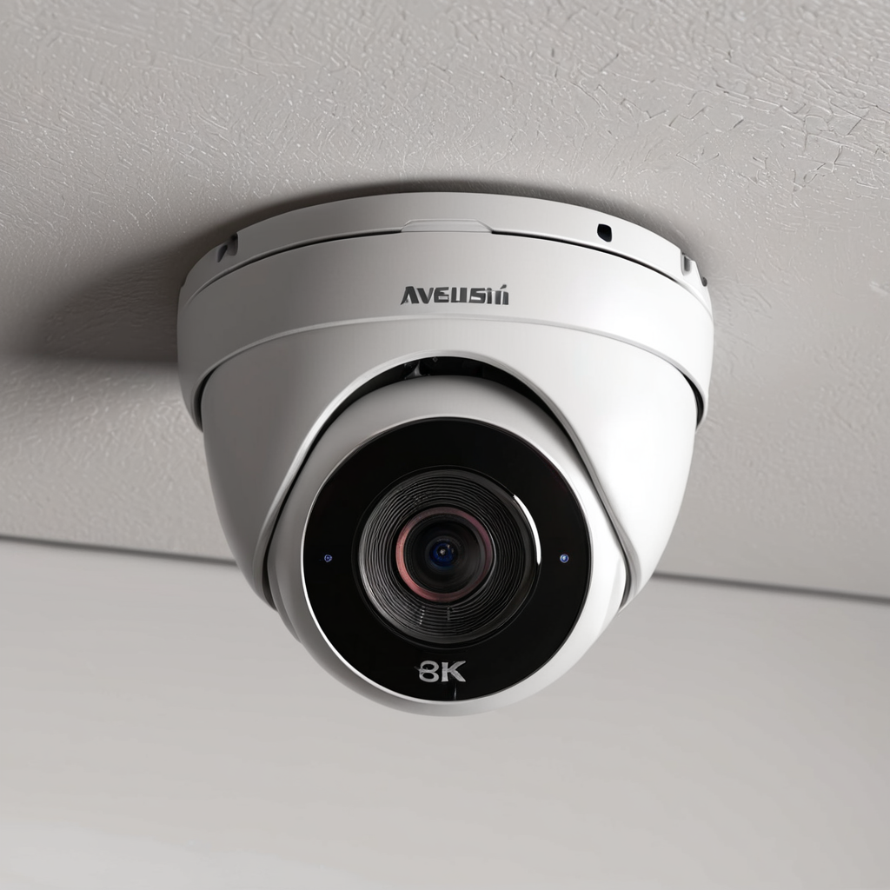
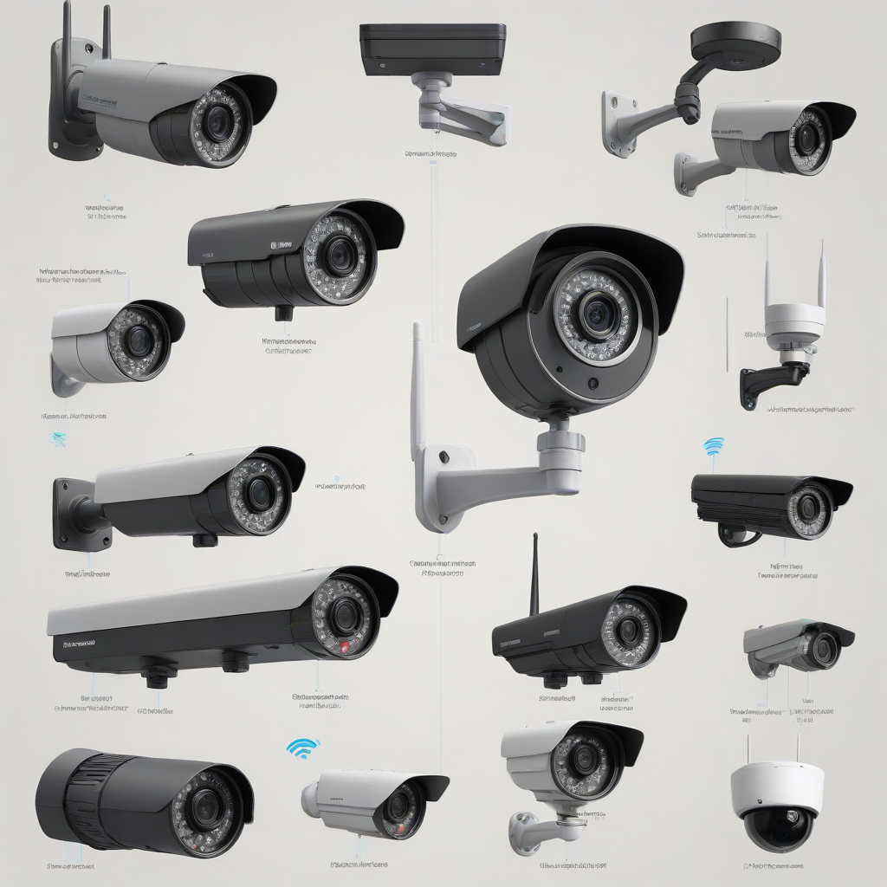
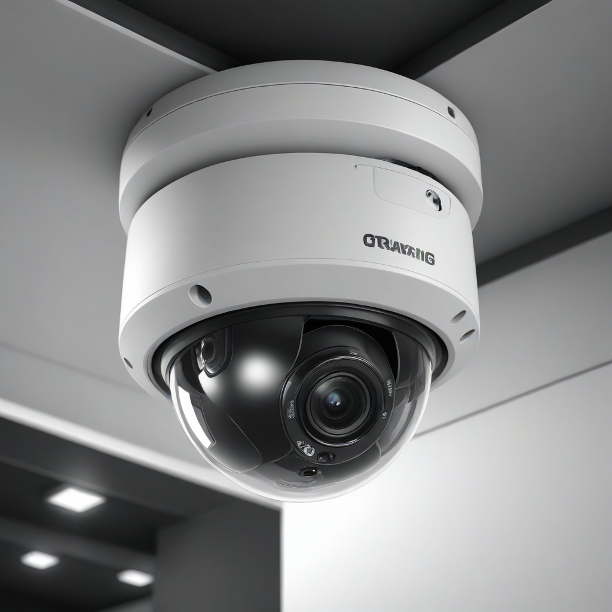

To choose the right wireless security camera installation for 2026, start by assessing your property’s weak points and budget. Select cameras based on your need for local storage versus cloud subscriptions, ensuring they have strong Wi-Fi connectivity and weather resistance for outdoor use. For renters, prioritize adhesive-mount models, while homeowners should consider hardwired battery hybrids for reliability.
Home safety has evolved significantly over the last decade, moving from simple motion sensors to intelligent, connected ecosystems. In 2026, a proper wireless security camera installation is no longer just about recording footage; it is about proactive monitoring, package protection, and peace of mind while you are away. Whether you are managing a large suburban estate or a compact city apartment, the ability to verify alerts instantly can be the difference between a minor nuisance and a significant security breach.
Many homeowners hesitate to invest in surveillance technology due to perceived complexity or cost. However, modern systems are designed for accessibility without sacrificing performance. The key lies in understanding the specific requirements of your environment and selecting hardware that aligns with your technical comfort level. This guide provides a comprehensive roadmap to navigating the 2026 market, ensuring you build a robust defense system tailored to your unique safety needs.
By following expert advice on placement, connectivity, and hardware selection, you can avoid common pitfalls like dead zones, subscription lock-ins, and poor video quality. This article will walk you through every step of the process, from choosing the best wireless security cameras to executing a flawless DIY security camera setup. Let’s ensure your property is protected with the right technology, installed correctly the first time.
Understanding Your Security Needs Before Installation

Before purchasing a single device, you must conduct a thorough security audit of your property. A one-size-fits-all approach rarely works because a detached garage requires different coverage than a front porch. Start by identifying high-value areas: entry points like front and back doors, ground-floor windows, and driveways. These are the most common targets for opportunistic intruders.
Consider your lifestyle and daily routine. If you work long hours, you need a system with reliable battery life or continuous power options. If you have pets, motion detection sensitivity is crucial to prevent false alarms triggered by a cat walking across the lawn. Furthermore, consider your storage preferences. Do you want footage saved locally on a base station, or are you comfortable paying a monthly fee for cloud storage? Understanding these variables early prevents buying equipment that does not fit your operational needs.
Budget is another critical factor. While entry-level cameras are affordable, premium models offer features like two-way audio, color night vision, and AI person detection. Determine if you need a single camera for a porch or a full ecosystem covering the perimeter. Investing in a few high-quality units is often better than installing several cheap

Choosing the Right Wireless System Technology
The 2026 market offers three primary types of wireless cameras: battery-powered, hardwired battery hybrids, and plug-in. Battery-powered cameras offer the ultimate flexibility for installation since they require no drilling for power cables. However, they require regular charging or battery replacement, which can be inconvenient. Hardwired hybrids connect to power but connect to your network wirelessly, offering constant power without running ethernet cables. Plug-in cameras are stationary and require an outlet nearby, making them ideal for indoor use or outdoor areas with convenient access to electricity.
Key Features to Evaluate
- Video Resolution: Look for 1080p as a minimum, but 2K or 4K is becoming standard for identifying faces and license plates.
- Field of View: A 130-degree to 160-degree angle covers more ground, reducing blind spots.
- Night Vision: Standard infrared is common, but Color Night Vision allows you to see details in low light.
- Connectivity: Ensure the camera supports 2.4GHz and 5GHz bands for better stability.
- Weather Resistance: Outdoor cameras must have an IP65 or higher rating for dust and water protection.
Another critical decision is the storage method. Local storage saves footage to an SD card or a home base hub. This method has no monthly fees but is vulnerable if the device is stolen. Cloud storage uploads footage to a server, ensuring safety even if the camera is destroyed, but usually requires a subscription. Many modern systems offer a hybrid approach, allowing you to choose based on the severity of the event.
Top Wireless Security Cameras for 2026
Selecting from the best wireless security cameras can be overwhelming given the sheer volume of options. We have analyzed the top contenders based on reliability, video quality, and ease of use. Below is a comparison of leading models available for wireless security camera installation in 2026.
| Model | Power Source | Resolution | Local Storage | Approx. Price | Best For |
|---|---|---|---|---|---|
| Arlo Pro 5S 2K | Battery/Hybrid | 2K HDR | Yes (Base) | $199.99 | Homeowners wanting premium features |
| Ring Stick Up Cam | Battery/Plug-in | 1080p | No | $99.99 | Existing Ring ecosystem users |
| Eufy SoloCam C24 | Solar/Battery | 2K | Yes (Local) | $129.99 | Long-term outdoor monitoring |
| Google Nest Cam | Wired/Battery | 1080p HDR | No | $129.99 | Smart Home integration |
| Blink Outdoor 4 | Battery | 1080p | Yes (Sync Module) | $99.99 | Budget-conscious buyers |
Each of these systems has distinct advantages. The Arlo Pro 5S 2K stands out for its high-definition video and wire-free flexibility, though it leans heavily on cloud subscriptions for advanced features. The Eufy SoloCam C24 is excellent for those who want to avoid monthly fees, utilizing local storage in a compact, solar-ready design. For those deeply integrated into the Google ecosystem, the Nest Cam offers seamless automation with other smart devices. When choosing, prioritize the feature set that aligns with your specific installation environment.
Step-by-Step DIY Security Camera Setup
Executing a DIY security camera setup is entirely manageable for the average homeowner. Following a logical order of operations ensures you do not miss critical steps that could compromise security. Below is a detailed guide to getting your system online and recording effectively.
- Charge Your Devices: Before mounting anything, fully charge the cameras or insert fresh batteries. This ensures they have enough power to complete the initial pairing process.
- Download the Companion App: Install the manufacturer’s application on your smartphone. Create an account and secure it with two-factor authentication to protect your footage.
- Test Connectivity: Place the camera near your router to verify the signal strength. Most apps provide a signal indicator. If the signal is weak indoors, it will likely be worse outdoors.
- Pair the Camera: Follow the in-app instructions to add the device. This usually involves scanning a QR code on the camera or pressing a sync button on the hub.
- Mount the Hardware: Use the provided bracket to secure the camera. For battery models, this is often done with adhesive strips or screws. Ensure the camera is level to prevent skewed footage.
- Configure Zones: Most apps allow you to set activity zones. Define areas to ignore (like a busy street) to reduce notifications for irrelevant motion.
- Test the Feed: Walk in front of the camera to ensure motion detection triggers an alert on your phone. Check the video quality and night vision settings.
During the mounting phase, be mindful of structural integrity. If drilling into siding, use weatherproof anchors. If mounting on wood, check for studs. Improper mounting can lead to cameras falling off during storms or being easily knocked over by intruders. Always test the angle before permanently tightening screws or peeling adhesive backing.
Wireless Camera Placement Tips
Even the best camera is useless if it cannot see what is happening. Proper wireless camera placement tips are essential for maximizing coverage and minimizing blind spots. The goal is to capture faces and license plates rather than just detecting movement. Cameras should generally be mounted at least 7 to 9 feet high. This height frustrates tampering attempts while providing a downward angle that captures identification details.
Consider the lighting conditions of the area. Pointing a camera directly at the sun or a bright light source can cause glare, rendering the footage useless during the day. Instead, angle the camera so the light source is behind the lens or to the side. For night vision, avoid placing cameras near reflective surfaces like windows or light-colored walls, which can cause infrared glare and wash out the image.
Ensure you cover the approach paths, not just the entry point. An intruder may loiter in the bushes before attempting entry. A camera focused solely on the door might miss them entirely. Use wide-angle lenses or multiple cameras to create overlapping fields of view. This redundancy ensures that if one angle is obstructed by a tree or vehicle, another camera captures the event. Regularly trim vegetation that may grow into the camera’s field of view over time.
Ensuring a Stable Security Camera WiFi Connection
The backbone of any wireless system is the security camera WiFi connection. Weak signals lead to dropped footage, laggy live views, and missed alerts. Most wireless security cameras operate on the 2.4GHz frequency because it penetrates walls better than 5GHz. However, 5GHz offers faster data transfer rates. If your router supports dual-band, ensure your camera is configured for the band that provides the strongest signal at the mounting location.
Interference is a common issue in 2026 smart homes. Microwaves, baby monitors, and neighboring networks can congest the 2.4GHz band. If you experience buffering, consider changing your router’s channel to a less congested one. For larger properties, a mesh Wi-Fi system is highly recommended. Mesh nodes act as repeaters, extending your network’s reach to outbuildings, garages, and the backyard where standard routers often struggle.
Test your signal strength at the intended mounting spot before installing. Use a smartphone app like WiFiman or NetSpot to visualize coverage. If the signal is consistently below -70dBm, the camera may struggle to upload video clips during an event. In such cases, a wired ethernet connection with PoE (Power over Ethernet) or a dedicated Wi-Fi extender positioned halfway between the router and camera can solve the issue.
Renter Friendly Security Cameras
Living in an apartment or rental property often restricts permanent modifications. Fortunately, there are excellent renter friendly security cameras designed to be non-invasive. These models typically use strong adhesive mounts or magnetic bases that do not require drilling into walls or siding. Brands like Blink and Eufy offer compact models that can be placed on shelves for indoor monitoring or mounted with command strips for temporary outdoor use.
Indoor cameras are the safest bet for renters. They can be plugged into existing outlets without running new wires. If you need outdoor coverage, look for battery-powered models that can be placed on a balcony railing or window ledge. Avoid systems that require a central hub mounted to a wall if your lease prohibits it. Many modern cameras connect directly to the Wi-Fi without a base station, simplifying the setup and teardown process when you move.
Check your lease agreement before installation. Some landlords allow adhesive mounts but prohibit drilling. Always remove adhesive residue carefully when moving to avoid security deposit deductions. Using a portable camera that you can take with you is the ultimate solution for renters. This ensures you maintain your security investment regardless of where you live next.
Frequently Asked Questions
Do I need a subscription for wireless security cameras?
Not necessarily. Many cameras offer basic live viewing and motion alerts for free. However, features like video history, AI detection (identifying people vs. animals), and cloud storage usually require a monthly subscription. Local storage options via SD cards or home hubs can eliminate these fees entirely.
How long do battery security cameras last?
Battery life varies based on usage and temperature. In low-traffic areas, batteries may last 6 months to a year. In high-traffic zones or cold weather, they may need charging every week or two. Solar panels can extend battery life indefinitely, making them ideal for 24/7 operation.
Can I access my cameras while traveling?
Yes, most modern systems allow remote access via their mobile apps. You can view live feeds and review recordings from anywhere with an internet connection. Ensure your home Wi-Fi is secure to prevent unauthorized access to your footage.
Are wireless cameras private and secure?
Security depends on your network hygiene. Use strong, unique passwords for your Wi-Fi and camera app accounts. Enable two-factor authentication (2FA) wherever available. Regularly update the firmware of your cameras to patch security vulnerabilities.
How do I protect my cameras from extreme weather?
Ensure your outdoor cameras have an IP65 or IP67 rating for water and dust resistance. Mount them under eaves or overhangs to reduce direct exposure to heavy rain and snow. Clean lenses regularly to remove snow or dirt buildup that obstructs vision.
What is the difference between indoor and outdoor cameras?
Outdoor cameras are built to withstand temperature extremes, rain, and dust, often featuring stronger enclosures and weather-resistant materials. Indoor cameras are typically more compact and may lack the ruggedization required for long-term exterior exposure.
Conclusion
Choosing and installing a wireless security camera system is a significant step toward enhancing your home safety in 2026. By carefully assessing your needs, selecting the right hardware, and executing a proper installation, you create a reliable deterrent against crime and a valuable tool for monitoring your property. Remember that technology is only as effective as its setup; prioritize signal strength, optimal placement, and regular maintenance.
Whether you choose a subscription-based ecosystem or a local storage solution, the goal remains the same: peace of mind. Start with a small setup, test your coverage, and expand as needed. For those looking to expand their security further, consider integrating these cameras with [our guide to home alarm systems] for a layered defense strategy. Taking these actionable steps today ensures that your home remains a safe haven for you and your family.